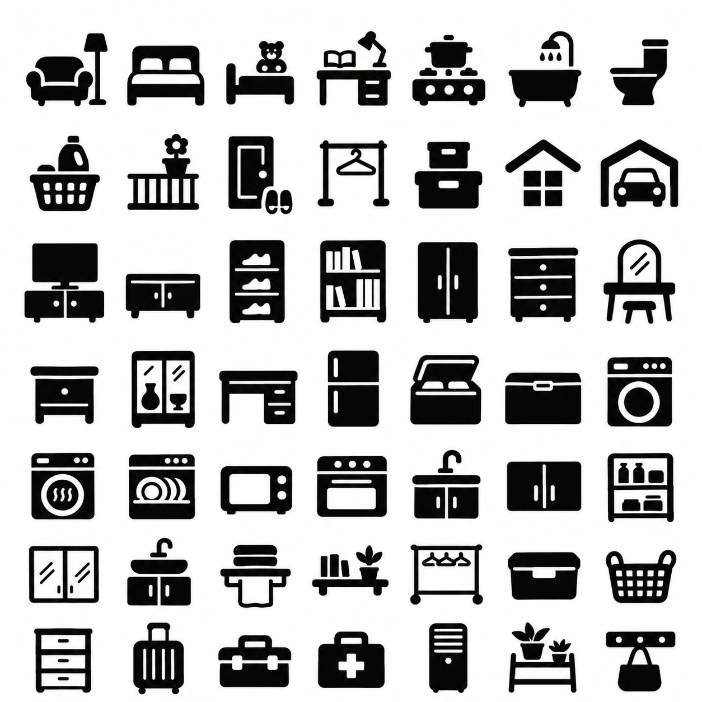

1장(방 · 가구 49개)은 받았어요.
2장부터 30장까지, 장마다 49개가 모두 달라요.
23장부터는 수납 앱에서 자주 쓰는데 우리에게 없던 것들이에요.

첨부 이미지와 똑같은 스타일의 픽토그램 49개를 7×7 격자 한 장에 그려 줘. 스타일: 꽉 찬 단색 실루엣 아이콘(머티리얼 아이콘처럼). 둥근 모서리, 굵기 일정, 선이 아니라 면으로. 안쪽 구멍(문 · 손잡이 · 눈금 등)은 배경색으로 뚫기. 규칙: 순수 흰 배경에 검정 단색, 배경 사각형 없이 아이콘만, 칸마다 하나씩 가운데, 모두 같은 크기와 시각 무게, 글자 · 그림자 · 그라데이션 없음, 칸끼리 여백 충분히. 같은 것이 두 번 나오지 않게. 순서(왼쪽 위부터 가로로 7개씩): 1 프라이팬 2 냄비 3 웍 4 압력솥 5 전기밥솥 6 주전자 7 전기포트 8 국자 9 뒤집개 10 집게 11 거품기 12 주걱 13 식칼 14 도마 15 주방가위 16 감자칼 17 강판 18 채반 19 체 20 믹싱볼 21 계량컵 22 계량스푼 23 밀대 24 깔때기 25 병따개 26 캔따개 27 와인오프너 28 마늘다지기 29 절구 30 찜기 31 뚝배기 32 석쇠 33 에어프라이어 34 믹서기 35 토스터 36 커피머신 37 핸드블렌더 38 전기그릴 39 와플메이커 40 정수기 41 행주 42 수세미 43 고무장갑 44 앞치마 45 냄비받침 46 오븐장갑 47 키친타이머 48 주방저울 49 키친타월
첨부 이미지와 똑같은 스타일의 픽토그램 49개를 7×7 격자 한 장에 그려 줘. 스타일: 꽉 찬 단색 실루엣 아이콘(머티리얼 아이콘처럼). 둥근 모서리, 굵기 일정, 선이 아니라 면으로. 안쪽 구멍(문 · 손잡이 · 눈금 등)은 배경색으로 뚫기. 규칙: 순수 흰 배경에 검정 단색, 배경 사각형 없이 아이콘만, 칸마다 하나씩 가운데, 모두 같은 크기와 시각 무게, 글자 · 그림자 · 그라데이션 없음, 칸끼리 여백 충분히. 같은 것이 두 번 나오지 않게. 순서(왼쪽 위부터 가로로 7개씩): 1 밥공기 2 국그릇 3 접시 4 앞접시 5 대접 6 쟁반 7 머그컵 8 유리컵 9 와인잔 10 맥주잔 11 텀블러 12 보온병 13 물병 14 젓가락 15 숟가락 16 포크 17 나이프 18 수저통 19 이쑤시개 20 빨대 21 도시락통 22 밀폐용기 23 유리용기 24 지퍼백 25 랩 26 호일 27 비닐봉지 28 위생장갑 29 키친랩 30 김치통 31 쌀통 32 양념통 33 소금통 34 후추통 35 기름병 36 간장병 37 시럽병 38 잼병 39 유리병 40 티백통 41 커피캔 42 반찬통 43 아이스박스 44 얼음틀 45 컵받침 46 식탁매트 47 냅킨 48 이유식그릇 49 일회용컵
첨부 이미지와 똑같은 스타일의 픽토그램 49개를 7×7 격자 한 장에 그려 줘. 스타일: 꽉 찬 단색 실루엣 아이콘(머티리얼 아이콘처럼). 둥근 모서리, 굵기 일정, 선이 아니라 면으로. 안쪽 구멍(문 · 손잡이 · 눈금 등)은 배경색으로 뚫기. 규칙: 순수 흰 배경에 검정 단색, 배경 사각형 없이 아이콘만, 칸마다 하나씩 가운데, 모두 같은 크기와 시각 무게, 글자 · 그림자 · 그라데이션 없음, 칸끼리 여백 충분히. 같은 것이 두 번 나오지 않게. 순서(왼쪽 위부터 가로로 7개씩): 1 사과 2 배 3 귤 4 오렌지 5 레몬 6 바나나 7 포도 8 딸기 9 수박 10 참외 11 복숭아 12 자두 13 키위 14 망고 15 파인애플 16 체리 17 블루베리 18 감 19 밤 20 토마토 21 방울토마토 22 오이 23 당근 24 감자 25 고구마 26 양파 27 대파 28 쪽파 29 마늘 30 생강 31 배추 32 양배추 33 상추 34 깻잎 35 시금치 36 브로콜리 37 파프리카 38 고추 39 가지 40 호박 41 버섯 42 콩나물 43 무 44 옥수수 45 아보카도 46 연근 47 우엉 48 두부 49 달걀
첨부 이미지와 똑같은 스타일의 픽토그램 49개를 7×7 격자 한 장에 그려 줘. 스타일: 꽉 찬 단색 실루엣 아이콘(머티리얼 아이콘처럼). 둥근 모서리, 굵기 일정, 선이 아니라 면으로. 안쪽 구멍(문 · 손잡이 · 눈금 등)은 배경색으로 뚫기. 규칙: 순수 흰 배경에 검정 단색, 배경 사각형 없이 아이콘만, 칸마다 하나씩 가운데, 모두 같은 크기와 시각 무게, 글자 · 그림자 · 그라데이션 없음, 칸끼리 여백 충분히. 같은 것이 두 번 나오지 않게. 순서(왼쪽 위부터 가로로 7개씩): 1 소고기 2 돼지고기 3 닭고기 4 닭다리 5 삼겹살 6 스테이크 7 햄 8 소시지 9 베이컨 10 스팸 11 생선 12 고등어 13 연어 14 새우 15 오징어 16 문어 17 조개 18 굴 19 게 20 멸치 21 김 22 미역 23 다시마 24 어묵 25 맛살 26 냉동만두 27 냉동피자 28 냉동볶음밥 29 치킨너겟 30 돈가스 31 아이스크림 32 아이스바 33 얼음 34 냉동새우 35 냉동블루베리 36 떡 37 떡국떡 38 순대 39 족발 40 훈제오리 41 육포 42 치즈 43 버터 44 우유 45 요구르트 46 생크림 47 계란판 48 두유 49 플레인요거트
첨부 이미지와 똑같은 스타일의 픽토그램 49개를 7×7 격자 한 장에 그려 줘. 스타일: 꽉 찬 단색 실루엣 아이콘(머티리얼 아이콘처럼). 둥근 모서리, 굵기 일정, 선이 아니라 면으로. 안쪽 구멍(문 · 손잡이 · 눈금 등)은 배경색으로 뚫기. 규칙: 순수 흰 배경에 검정 단색, 배경 사각형 없이 아이콘만, 칸마다 하나씩 가운데, 모두 같은 크기와 시각 무게, 글자 · 그림자 · 그라데이션 없음, 칸끼리 여백 충분히. 같은 것이 두 번 나오지 않게. 순서(왼쪽 위부터 가로로 7개씩): 1 라면 2 컵라면 3 국수 4 파스타면 5 쌀 6 잡곡 7 밀가루 8 부침가루 9 빵가루 10 시리얼 11 식빵 12 베이글 13 케이크 14 쿠키 15 과자 16 감자칩 17 초콜릿 18 사탕 19 젤리 20 껌 21 견과류 22 아몬드 23 땅콩 24 팝콘 25 떡볶이 26 즉석밥 27 즉석카레 28 통조림 29 참치캔 30 옥수수캔 31 과일통조림 32 수프 33 죽 34 김자반 35 김치 36 단무지 37 피클 38 잼 39 꿀 40 땅콩버터 41 누텔라 42 마시멜로 43 프레첼 44 크래커 45 에너지바 46 단백질바 47 뻥튀기 48 약과 49 양갱
첨부 이미지와 똑같은 스타일의 픽토그램 49개를 7×7 격자 한 장에 그려 줘. 스타일: 꽉 찬 단색 실루엣 아이콘(머티리얼 아이콘처럼). 둥근 모서리, 굵기 일정, 선이 아니라 면으로. 안쪽 구멍(문 · 손잡이 · 눈금 등)은 배경색으로 뚫기. 규칙: 순수 흰 배경에 검정 단색, 배경 사각형 없이 아이콘만, 칸마다 하나씩 가운데, 모두 같은 크기와 시각 무게, 글자 · 그림자 · 그라데이션 없음, 칸끼리 여백 충분히. 같은 것이 두 번 나오지 않게. 순서(왼쪽 위부터 가로로 7개씩): 1 간장 2 고추장 3 된장 4 쌈장 5 식초 6 설탕 7 소금 8 후추 9 고춧가루 10 참기름 11 들기름 12 식용유 13 올리브유 14 맛술 15 굴소스 16 케첩 17 마요네즈 18 머스터드 19 핫소스 20 스테이크소스 21 바비큐소스 22 데리야끼소스 23 칠리소스 24 와사비 25 연겨자 26 다시다 27 치킨스톡 28 카레가루 29 짜장가루 30 물엿 31 올리고당 32 매실청 33 액젓 34 새우젓 35 쯔유 36 발사믹 37 드레싱 38 파마산 39 시나몬 40 바닐라 41 베이킹파우더 42 이스트 43 전분 44 깨 45 허브 46 월계수잎 47 소금통그라인더 48 후추그라인더 49 조미료통
첨부 이미지와 똑같은 스타일의 픽토그램 49개를 7×7 격자 한 장에 그려 줘. 스타일: 꽉 찬 단색 실루엣 아이콘(머티리얼 아이콘처럼). 둥근 모서리, 굵기 일정, 선이 아니라 면으로. 안쪽 구멍(문 · 손잡이 · 눈금 등)은 배경색으로 뚫기. 규칙: 순수 흰 배경에 검정 단색, 배경 사각형 없이 아이콘만, 칸마다 하나씩 가운데, 모두 같은 크기와 시각 무게, 글자 · 그림자 · 그라데이션 없음, 칸끼리 여백 충분히. 같은 것이 두 번 나오지 않게. 순서(왼쪽 위부터 가로로 7개씩): 1 생수 2 탄산수 3 콜라 4 사이다 5 주스 6 오렌지주스 7 커피원두 8 캡슐커피 9 인스턴트커피 10 믹스커피 11 녹차 12 홍차 13 보리차 14 허브차 15 유자차 16 꿀차 17 코코아 18 우유팩 19 두유팩 20 요구르트병 21 이온음료 22 에너지드링크 23 식혜 24 맥주캔 25 맥주병 26 소주 27 막걸리 28 와인 29 위스키 30 샴페인 31 칵테일 32 얼음컵 33 빨대컵 34 텀블러커피 35 티포트 36 드립포트 37 드리퍼 38 원두그라인더 39 커피필터 40 시럽 41 단백질쉐이크 42 분유 43 스무디 44 레모네이드 45 콤부차 46 탄산수제조기 47 물티슈팩 48 보틀 49 캔홀더
첨부 이미지와 똑같은 스타일의 픽토그램 49개를 7×7 격자 한 장에 그려 줘. 스타일: 꽉 찬 단색 실루엣 아이콘(머티리얼 아이콘처럼). 둥근 모서리, 굵기 일정, 선이 아니라 면으로. 안쪽 구멍(문 · 손잡이 · 눈금 등)은 배경색으로 뚫기. 규칙: 순수 흰 배경에 검정 단색, 배경 사각형 없이 아이콘만, 칸마다 하나씩 가운데, 모두 같은 크기와 시각 무게, 글자 · 그림자 · 그라데이션 없음, 칸끼리 여백 충분히. 같은 것이 두 번 나오지 않게. 순서(왼쪽 위부터 가로로 7개씩): 1 청소기 2 무선청소기 3 로봇청소기 4 물걸레 5 빗자루 6 쓰레받기 7 대걸레 8 밀대걸레 9 걸레 10 먼지떨이 11 롤클리너 12 스펀지 13 솔 14 변기솔 15 청소포 16 정전기청소포 17 키친클리너 18 락스 19 세제 20 유리세정제 21 곰팡이제거제 22 배수구클리너 23 탈취제 24 방향제 25 쓰레기통 26 분리수거함 27 음식물쓰레기통 28 종량제봉투 29 재활용봉투 30 먼지제거테이프 31 변기뚫어뻥 32 손걸레 33 양동이 34 분무기 35 스팀청소기 36 창문닦이 37 먼지봉투 38 필터 39 공기청정기 40 제습통 41 방충망 42 환풍기필터 43 써큘레이터 44 모기향 45 살충제 46 바퀴약 47 끈끈이 48 극세사장갑 49 청소카트
첨부 이미지와 똑같은 스타일의 픽토그램 49개를 7×7 격자 한 장에 그려 줘. 스타일: 꽉 찬 단색 실루엣 아이콘(머티리얼 아이콘처럼). 둥근 모서리, 굵기 일정, 선이 아니라 면으로. 안쪽 구멍(문 · 손잡이 · 눈금 등)은 배경색으로 뚫기. 규칙: 순수 흰 배경에 검정 단색, 배경 사각형 없이 아이콘만, 칸마다 하나씩 가운데, 모두 같은 크기와 시각 무게, 글자 · 그림자 · 그라데이션 없음, 칸끼리 여백 충분히. 같은 것이 두 번 나오지 않게. 순서(왼쪽 위부터 가로로 7개씩): 1 세탁기 2 세탁세제 3 섬유유연제 4 표백제 5 세탁망 6 빨래바구니 7 빨래건조대 8 옷걸이 9 바지걸이 10 빨래집게 11 다리미 12 다리미판 13 스팀다리미 14 보풀제거기 15 옷솔 16 신발건조기 17 의류관리기 18 건조기시트 19 얼룩제거제 20 세탁볼 21 빨래비누 22 손빨래통 23 수선실 24 단추 25 지퍼 26 옷핀 27 이름표 28 압축팩 29 옷커버 30 방충제 31 제습제 32 신발주머니 33 신발깔창 34 구둣주걱 35 구두약 36 우산 37 우비 38 장화 39 실내화 40 신발정리대 41 양말정리함 42 속옷정리함 43 수건정리함 44 목욕가운 45 옷개기판 46 세탁소옷걸이 47 다림질장갑 48 털모자 49 귀마개
첨부 이미지와 똑같은 스타일의 픽토그램 49개를 7×7 격자 한 장에 그려 줘. 스타일: 꽉 찬 단색 실루엣 아이콘(머티리얼 아이콘처럼). 둥근 모서리, 굵기 일정, 선이 아니라 면으로. 안쪽 구멍(문 · 손잡이 · 눈금 등)은 배경색으로 뚫기. 규칙: 순수 흰 배경에 검정 단색, 배경 사각형 없이 아이콘만, 칸마다 하나씩 가운데, 모두 같은 크기와 시각 무게, 글자 · 그림자 · 그라데이션 없음, 칸끼리 여백 충분히. 같은 것이 두 번 나오지 않게. 순서(왼쪽 위부터 가로로 7개씩): 1 칫솔 2 치약 3 전동칫솔 4 치실 5 구강청결제 6 혀클리너 7 비누 8 비누받침 9 핸드워시 10 샴푸 11 린스 12 트리트먼트 13 바디워시 14 바디로션 15 샤워볼 16 샤워타올 17 수건 18 목욕수건 19 면도기 20 면도크림 21 쉐이빙폼 22 드라이기 23 고데기 24 빗 25 헤어브러시 26 헤어밴드 27 머리끈 28 샤워캡 29 욕실매트 30 욕조마개 31 변기커버 32 휴지 33 휴지걸이 34 변기물티슈 35 손톱깎이 36 귀이개 37 면봉 38 욕실청소솔 39 확대경 40 체중계 41 욕조온도계 42 족욕기 43 반신욕기 44 입욕제 45 때수건 46 욕실화 47 방수시계 48 샤워필터 49 욕실선반
첨부 이미지와 똑같은 스타일의 픽토그램 49개를 7×7 격자 한 장에 그려 줘. 스타일: 꽉 찬 단색 실루엣 아이콘(머티리얼 아이콘처럼). 둥근 모서리, 굵기 일정, 선이 아니라 면으로. 안쪽 구멍(문 · 손잡이 · 눈금 등)은 배경색으로 뚫기. 규칙: 순수 흰 배경에 검정 단색, 배경 사각형 없이 아이콘만, 칸마다 하나씩 가운데, 모두 같은 크기와 시각 무게, 글자 · 그림자 · 그라데이션 없음, 칸끼리 여백 충분히. 같은 것이 두 번 나오지 않게. 순서(왼쪽 위부터 가로로 7개씩): 1 스킨 2 로션 3 에센스 4 세럼 5 크림 6 아이크림 7 선크림 8 쿠션 9 파운데이션 10 컨실러 11 파우더 12 블러셔 13 하이라이터 14 립스틱 15 립밤 16 립글로스 17 아이섀도 18 아이라이너 19 마스카라 20 눈썹연필 21 뷰러 22 화장솜 23 화장붓 24 퍼프 25 클렌징폼 26 클렌징오일 27 클렌징워터 28 마스크팩 29 각질제거제 30 미스트 31 향수 32 데오드란트 33 핸드크림 34 매니큐어 35 네일리무버 36 네일파일 37 족집게 38 거울 39 화장품파우치 40 헤어오일 41 헤어스프레이 42 왁스 43 염색약 44 헤어집게 45 실핀 46 헤어롤 47 눈썹칼 48 속눈썹 49 렌즈케이스
첨부 이미지와 똑같은 스타일의 픽토그램 49개를 7×7 격자 한 장에 그려 줘. 스타일: 꽉 찬 단색 실루엣 아이콘(머티리얼 아이콘처럼). 둥근 모서리, 굵기 일정, 선이 아니라 면으로. 안쪽 구멍(문 · 손잡이 · 눈금 등)은 배경색으로 뚫기. 규칙: 순수 흰 배경에 검정 단색, 배경 사각형 없이 아이콘만, 칸마다 하나씩 가운데, 모두 같은 크기와 시각 무게, 글자 · 그림자 · 그라데이션 없음, 칸끼리 여백 충분히. 같은 것이 두 번 나오지 않게. 순서(왼쪽 위부터 가로로 7개씩): 1 구급상자 2 반창고 3 붕대 4 거즈 5 소독약 6 연고 7 파스 8 해열제 9 진통제 10 감기약 11 기침약 12 소화제 13 지사제 14 변비약 15 알레르기약 16 안약 17 인공눈물 18 콧물약 19 목캔디 20 비타민 21 영양제 22 오메가3 23 유산균 24 홍삼 25 마스크 26 손소독제 27 체온계 28 혈압계 29 혈당계 30 체지방계 31 찜질팩 32 핫팩 33 아이스팩 34 마사지기 35 지압봉 36 보호대 37 무릎보호대 38 깁스 39 약통 40 약봉투 41 알약케이스 42 주사기 43 처방전 44 의료보험증 45 안경 46 콘택트렌즈 47 보청기 48 휠체어 49 지팡이
첨부 이미지와 똑같은 스타일의 픽토그램 49개를 7×7 격자 한 장에 그려 줘. 스타일: 꽉 찬 단색 실루엣 아이콘(머티리얼 아이콘처럼). 둥근 모서리, 굵기 일정, 선이 아니라 면으로. 안쪽 구멍(문 · 손잡이 · 눈금 등)은 배경색으로 뚫기. 규칙: 순수 흰 배경에 검정 단색, 배경 사각형 없이 아이콘만, 칸마다 하나씩 가운데, 모두 같은 크기와 시각 무게, 글자 · 그림자 · 그라데이션 없음, 칸끼리 여백 충분히. 같은 것이 두 번 나오지 않게. 순서(왼쪽 위부터 가로로 7개씩): 1 젖병 2 분유포트 3 분유통 4 젖꼭지 5 쪽쪽이 6 턱받이 7 기저귀 8 아기물티슈 9 기저귀가방 10 기저귀교환대 11 아기욕조 12 아기샴푸 13 아기로션 14 아기파우더 15 귀체온계 16 콧물흡입기 17 아기손톱깎이 18 유모차 19 카시트 20 아기띠 21 보행기 22 바운서 23 아기침대 24 범퍼침대 25 모빌 26 딸랑이 27 치발기 28 이유식기 29 이유식스푼 30 아기물병 31 아기의자 32 아기모자 33 아기양말 34 배냇저고리 35 우주복 36 수유쿠션 37 유축기 38 젖병소독기 39 젖병솔 40 아기세제 41 안전문 42 모서리보호대 43 콘센트커버 44 아기모니터 45 그림책 46 촉감책 47 애착인형 48 수면조끼 49 아기수건
첨부 이미지와 똑같은 스타일의 픽토그램 49개를 7×7 격자 한 장에 그려 줘. 스타일: 꽉 찬 단색 실루엣 아이콘(머티리얼 아이콘처럼). 둥근 모서리, 굵기 일정, 선이 아니라 면으로. 안쪽 구멍(문 · 손잡이 · 눈금 등)은 배경색으로 뚫기. 규칙: 순수 흰 배경에 검정 단색, 배경 사각형 없이 아이콘만, 칸마다 하나씩 가운데, 모두 같은 크기와 시각 무게, 글자 · 그림자 · 그라데이션 없음, 칸끼리 여백 충분히. 같은 것이 두 번 나오지 않게. 순서(왼쪽 위부터 가로로 7개씩): 1 레고 2 블록 3 인형 4 곰인형 5 로봇 6 자동차장난감 7 기차장난감 8 비행기장난감 9 공 10 공기놀이 11 딱지 12 야구공 13 배드민턴 14 윷놀이 15 훌라후프 16 퍼즐 17 보드게임 18 카드게임 19 체스 20 바둑 21 주사위 22 큐브 23 비눗방울 24 물총 25 연 26 요요 27 팽이 28 클레이 29 색종이 30 크레파스 31 색연필 32 물감 33 스케치북 34 스티커 35 슬라임 36 장난감총 37 소꿉놀이 38 주방놀이 39 병원놀이 40 마트놀이 41 텐트놀이 42 볼풀 43 미끄럼틀 44 그네 45 붕붕카 46 세발자전거 47 무선조종차 48 게임패드 49 장난감상자
첨부 이미지와 똑같은 스타일의 픽토그램 49개를 7×7 격자 한 장에 그려 줘. 스타일: 꽉 찬 단색 실루엣 아이콘(머티리얼 아이콘처럼). 둥근 모서리, 굵기 일정, 선이 아니라 면으로. 안쪽 구멍(문 · 손잡이 · 눈금 등)은 배경색으로 뚫기. 규칙: 순수 흰 배경에 검정 단색, 배경 사각형 없이 아이콘만, 칸마다 하나씩 가운데, 모두 같은 크기와 시각 무게, 글자 · 그림자 · 그라데이션 없음, 칸끼리 여백 충분히. 같은 것이 두 번 나오지 않게. 순서(왼쪽 위부터 가로로 7개씩): 1 개밥그릇 2 물그릇 3 사료 4 사료통 5 간식 6 개껌 7 목줄 8 하네스 9 리드줄 10 배변패드 11 배변봉투 12 고양이모래 13 모래삽 14 화장실 15 스크래쳐 16 캣타워 17 낚싯대장난감 18 공장난감 19 삑삑이 20 방석 21 켄넬 22 이동가방 23 펫유모차 24 옷 25 신발 26 펫브러시 27 발톱깎이 28 펫샴푸 29 펫치약 30 귀세정제 31 약 32 펫영양제 33 심장사상충약 34 구충제 35 넥카라 36 인식표 37 어항 38 수초 39 물고기밥 40 새장 41 새모이 42 햄스터집 43 쳇바퀴 44 톱밥 45 급식기 46 급수기 47 자동급식기 48 펫드라이룸 49 펫카메라
첨부 이미지와 똑같은 스타일의 픽토그램 49개를 7×7 격자 한 장에 그려 줘. 스타일: 꽉 찬 단색 실루엣 아이콘(머티리얼 아이콘처럼). 둥근 모서리, 굵기 일정, 선이 아니라 면으로. 안쪽 구멍(문 · 손잡이 · 눈금 등)은 배경색으로 뚫기. 규칙: 순수 흰 배경에 검정 단색, 배경 사각형 없이 아이콘만, 칸마다 하나씩 가운데, 모두 같은 크기와 시각 무게, 글자 · 그림자 · 그라데이션 없음, 칸끼리 여백 충분히. 같은 것이 두 번 나오지 않게. 순서(왼쪽 위부터 가로로 7개씩): 1 볼펜 2 연필 3 샤프 4 지우개 5 형광펜 6 매직 7 네임펜 8 자 9 가위 10 커터칼 11 풀 12 테이프 13 양면테이프 14 스테이플러 15 심 16 펀치 17 클립 18 더블클립 19 파일꽂이 20 포스트잇 21 메모지 22 노트 23 다이어리 24 수첩 25 파일 26 클리어파일 27 바인더 28 봉투 29 편지지 30 엽서 31 우표 32 도장 33 인주 34 계산기 35 달력 36 필통 37 연필깎이 38 책갈피 39 라벨기 40 화이트 41 수정테이프 42 마스킹테이프 43 압정 44 자석 45 칠판 46 보드마커 47 명함 48 서류함 49 북엔드
첨부 이미지와 똑같은 스타일의 픽토그램 49개를 7×7 격자 한 장에 그려 줘. 스타일: 꽉 찬 단색 실루엣 아이콘(머티리얼 아이콘처럼). 둥근 모서리, 굵기 일정, 선이 아니라 면으로. 안쪽 구멍(문 · 손잡이 · 눈금 등)은 배경색으로 뚫기. 규칙: 순수 흰 배경에 검정 단색, 배경 사각형 없이 아이콘만, 칸마다 하나씩 가운데, 모두 같은 크기와 시각 무게, 글자 · 그림자 · 그라데이션 없음, 칸끼리 여백 충분히. 같은 것이 두 번 나오지 않게. 순서(왼쪽 위부터 가로로 7개씩): 1 스마트폰 2 태블릿 3 노트북 4 데스크톱 5 모니터 6 키보드 7 마우스 8 프린터 9 스캐너 10 TV 11 리모컨 12 셋톱박스 13 공유기 14 스피커 15 블루투스스피커 16 이어폰 17 무선이어폰 18 헤드폰 19 마이크 20 웹캠 21 카메라 22 액션캠 23 드론 24 게임CD 25 VR기기 26 스마트워치 27 전자책 28 MP3 29 라디오 30 전화기 31 탁상시계 32 알람시계 33 디지털액자 34 빔프로젝터 35 외장하드 36 USB메모리 37 SD카드 38 메모리리더기 39 바코드스캐너 40 전자사전 41 녹음기 42 번역기 43 무전기 44 손전등 45 블루투스트래커 46 전자모기채 47 스마트도어벨 48 스마트플러그 49 스마트전구
첨부 이미지와 똑같은 스타일의 픽토그램 49개를 7×7 격자 한 장에 그려 줘. 스타일: 꽉 찬 단색 실루엣 아이콘(머티리얼 아이콘처럼). 둥근 모서리, 굵기 일정, 선이 아니라 면으로. 안쪽 구멍(문 · 손잡이 · 눈금 등)은 배경색으로 뚫기. 규칙: 순수 흰 배경에 검정 단색, 배경 사각형 없이 아이콘만, 칸마다 하나씩 가운데, 모두 같은 크기와 시각 무게, 글자 · 그림자 · 그라데이션 없음, 칸끼리 여백 충분히. 같은 것이 두 번 나오지 않게. 순서(왼쪽 위부터 가로로 7개씩): 1 충전기 2 고속충전기 3 무선충전기 4 보조배터리 5 USB케이블 6 C타입케이블 7 라이트닝케이블 8 HDMI케이블 9 랜선 10 연장선 11 멀티탭 12 어댑터 13 변환젠더 14 여행용어댑터 15 건전지 16 AA건전지 17 AAA건전지 18 충전지 19 배터리충전기 20 전구 21 LED전구 22 형광등 23 스탠드 24 무드등 25 센서등 26 비상조명 27 두꺼비집 28 차단기 29 콘센트 30 스위치 31 전선 32 케이블타이 33 케이블정리함 34 절연테이프 35 퓨즈 36 타이머콘센트 37 전기장판 38 온수매트 39 전기히터 40 전기난로 41 선풍기 42 냉풍기 43 제습기 44 가습기 45 전기모기채 46 충전스테이션 47 거치대 48 리모컨배터리 49 스마트홈허브
첨부 이미지와 똑같은 스타일의 픽토그램 49개를 7×7 격자 한 장에 그려 줘. 스타일: 꽉 찬 단색 실루엣 아이콘(머티리얼 아이콘처럼). 둥근 모서리, 굵기 일정, 선이 아니라 면으로. 안쪽 구멍(문 · 손잡이 · 눈금 등)은 배경색으로 뚫기. 규칙: 순수 흰 배경에 검정 단색, 배경 사각형 없이 아이콘만, 칸마다 하나씩 가운데, 모두 같은 크기와 시각 무게, 글자 · 그림자 · 그라데이션 없음, 칸끼리 여백 충분히. 같은 것이 두 번 나오지 않게. 순서(왼쪽 위부터 가로로 7개씩): 1 망치 2 드라이버 3 십자드라이버 4 전동드릴 5 렌치 6 스패너 7 몽키스패너 8 펜치 9 니퍼 10 롱노우즈 11 줄자 12 수평계 13 톱 14 쇠톱 15 커터 16 칼날 17 사포 18 줄 19 끌 20 클램프 21 바이스 22 못 23 나사 24 볼트 25 너트 26 와셔 27 앵커 28 실리콘건 29 실리콘 30 글루건 31 순간접착제 32 목공풀 33 페인트 34 붓 35 롤러 36 배관테이프 37 공구함 38 사다리 39 작업장갑 40 보안경 41 헤드랜턴 42 전기테스터 43 납땜기 44 케이블 45 경첩 46 자물쇠 47 열쇠 48 도어락배터리 49 벽걸이후크
첨부 이미지와 똑같은 스타일의 픽토그램 49개를 7×7 격자 한 장에 그려 줘. 스타일: 꽉 찬 단색 실루엣 아이콘(머티리얼 아이콘처럼). 둥근 모서리, 굵기 일정, 선이 아니라 면으로. 안쪽 구멍(문 · 손잡이 · 눈금 등)은 배경색으로 뚫기. 규칙: 순수 흰 배경에 검정 단색, 배경 사각형 없이 아이콘만, 칸마다 하나씩 가운데, 모두 같은 크기와 시각 무게, 글자 · 그림자 · 그라데이션 없음, 칸끼리 여백 충분히. 같은 것이 두 번 나오지 않게. 순서(왼쪽 위부터 가로로 7개씩): 1 자전거 2 헬멧 3 킥보드 4 인라인 5 스케이트보드 6 요가매트 7 덤벨 8 케틀벨 9 바벨 10 폼롤러 11 운동밴드 12 줄넘기 13 짐볼 14 철봉 15 러닝머신 16 실내자전거 17 축구공 18 농구공 19 배구공 20 야구글러브 21 야구배트 22 테니스라켓 23 배드민턴라켓 24 탁구라켓 25 골프클럽 26 골프공 27 수영복 28 수경 29 수모 30 튜브 31 구명조끼 32 스키 33 스노보드 34 등산화 35 등산스틱 36 배낭 37 텐트 38 침낭 39 캠핑의자 40 캠핑테이블 41 버너 42 코펠 43 랜턴 44 보냉백 45 해먹 46 낚싯대 47 쿨러 48 물통 49 스포츠고글
첨부 이미지와 똑같은 스타일의 픽토그램 49개를 7×7 격자 한 장에 그려 줘. 스타일: 꽉 찬 단색 실루엣 아이콘(머티리얼 아이콘처럼). 둥근 모서리, 굵기 일정, 선이 아니라 면으로. 안쪽 구멍(문 · 손잡이 · 눈금 등)은 배경색으로 뚫기. 규칙: 순수 흰 배경에 검정 단색, 배경 사각형 없이 아이콘만, 칸마다 하나씩 가운데, 모두 같은 크기와 시각 무게, 글자 · 그림자 · 그라데이션 없음, 칸끼리 여백 충분히. 같은 것이 두 번 나오지 않게. 순서(왼쪽 위부터 가로로 7개씩): 1 티셔츠 2 셔츠 3 블라우스 4 니트 5 후드티 6 맨투맨 7 청바지 8 슬랙스 9 반바지 10 치마 11 원피스 12 정장 13 코트 14 패딩 15 점퍼 16 가디건 17 조끼 18 속옷 19 브래지어 20 양말 21 스타킹 22 잠옷 23 운동복 24 래시가드 25 넥타이 26 벨트 27 스카프 28 목도리 29 장갑 30 모자 31 야구모자 32 비니 33 운동화 34 구두 35 하이힐 36 샌들 37 부츠 38 슬리퍼 39 크록스 40 가방 41 백팩 42 크로스백 43 지갑 44 손목시계 45 안경집 46 선글라스 47 반지 48 목걸이 49 귀걸이
첨부 이미지와 똑같은 스타일의 픽토그램 49개를 7×7 격자 한 장에 그려 줘. 스타일: 꽉 찬 단색 실루엣 아이콘(머티리얼 아이콘처럼). 둥근 모서리, 굵기 일정, 선이 아니라 면으로. 안쪽 구멍(문 · 손잡이 · 눈금 등)은 배경색으로 뚫기. 규칙: 순수 흰 배경에 검정 단색, 배경 사각형 없이 아이콘만, 칸마다 하나씩 가운데, 모두 같은 크기와 시각 무게, 글자 · 그림자 · 그라데이션 없음, 칸끼리 여백 충분히. 같은 것이 두 번 나오지 않게. 순서(왼쪽 위부터 가로로 7개씩): 1 여권 2 주민등록증 3 운전면허증 4 가족관계증명서 5 계약서 6 보증서 7 통장 8 인감도장 9 신용카드 10 체크카드 11 상품권 12 현금봉투 13 금고 14 보석함 15 금반지 16 금목걸이 17 진주목걸이 18 시계함 19 차키 20 비상금 21 저금통 22 가계부 23 세금고지서 24 보험증권 25 졸업장 26 상장 27 자격증 28 사진앨범 29 비밀번호수첩 30 등기권리증 31 건강검진결과 32 예방접종수첩 33 아기수첩 34 반려동물등록증 35 차량등록증 36 우편물 37 택배상자 38 명함첩 39 쿠폰 40 멤버십카드 41 교통카드 42 학생증 43 사원증 44 공인인증서USB 45 집열쇠 46 금괴 47 골드바 48 외화 49 동전
첨부 이미지와 똑같은 스타일의 픽토그램 49개를 7×7 격자 한 장에 그려 줘. 스타일: 꽉 찬 단색 실루엣 아이콘(머티리얼 아이콘처럼). 둥근 모서리, 굵기 일정, 선이 아니라 면으로. 안쪽 구멍(문 · 손잡이 · 눈금 등)은 배경색으로 뚫기. 규칙: 순수 흰 배경에 검정 단색, 배경 사각형 없이 아이콘만, 칸마다 하나씩 가운데, 모두 같은 크기와 시각 무게, 글자 · 그림자 · 그라데이션 없음, 칸끼리 여백 충분히. 같은 것이 두 번 나오지 않게. 순서(왼쪽 위부터 가로로 7개씩): 1 이불 2 차렵이불 3 베개 4 베개커버 5 이불커버 6 매트리스 7 토퍼 8 매트리스커버 9 담요 10 무릎담요 11 전기담요 12 커튼 13 블라인드 14 러그 15 카펫 16 발매트 17 식탁보 18 테이블러너 19 소파커버 20 모기장 21 여름이불 22 겨울이불 23 극세사이불 24 경추베개 25 바디필로우 26 아기이불 27 낮잠이불 28 캠핑담요 29 수면안대 30 이불가방 31 커튼봉 32 커튼집게 33 손수건 34 키친크로스 35 침대패드 36 방수요 37 요 38 패드 39 쿠션커버 40 등쿠션 41 목베개 42 방풍비닐 43 문풍지 44 암막커튼 45 레이스커튼 46 롤스크린 47 의자커버 48 식탁의자방석 49 현관매트
첨부 이미지와 똑같은 스타일의 픽토그램 49개를 7×7 격자 한 장에 그려 줘. 스타일: 꽉 찬 단색 실루엣 아이콘(머티리얼 아이콘처럼). 둥근 모서리, 굵기 일정, 선이 아니라 면으로. 안쪽 구멍(문 · 손잡이 · 눈금 등)은 배경색으로 뚫기. 규칙: 순수 흰 배경에 검정 단색, 배경 사각형 없이 아이콘만, 칸마다 하나씩 가운데, 모두 같은 크기와 시각 무게, 글자 · 그림자 · 그라데이션 없음, 칸끼리 여백 충분히. 같은 것이 두 번 나오지 않게. 순서(왼쪽 위부터 가로로 7개씩): 1 크리스마스트리 2 트리장식 3 리스 4 산타모자 5 핼러윈호박 6 생일초 7 생일모자 8 풍선 9 가랜드 10 파티컵 11 폭죽 12 선물상자 13 포장지 14 리본 15 쇼핑백 16 축하카드 17 한복 18 제기 19 병풍 20 향로 21 촛대 22 제사상 23 위패 24 돗자리 25 성경 26 묵주 27 염주 28 연등 29 복주머니 30 세뱃돈봉투 31 떡메 32 김장매트 33 고무대야 34 김장비닐 35 장독 36 항아리 37 고추건조기 38 부채 39 모기장텐트 40 쿨매트 41 대자리 42 손난로 43 털장갑 44 눈썰매 45 썰매 46 수박바구니 47 송편 48 떡살 49 화환
첨부 이미지와 똑같은 스타일의 픽토그램 49개를 7×7 격자 한 장에 그려 줘. 스타일: 꽉 찬 단색 실루엣 아이콘(머티리얼 아이콘처럼). 둥근 모서리, 굵기 일정, 선이 아니라 면으로. 안쪽 구멍(문 · 손잡이 · 눈금 등)은 배경색으로 뚫기. 규칙: 순수 흰 배경에 검정 단색, 배경 사각형 없이 아이콘만, 칸마다 하나씩 가운데, 모두 같은 크기와 시각 무게, 글자 · 그림자 · 그라데이션 없음, 칸끼리 여백 충분히. 같은 것이 두 번 나오지 않게. 순서(왼쪽 위부터 가로로 7개씩): 1 통기타 2 우쿨렐레 3 전자키보드 4 바이올린 5 첼로 6 플루트 7 리코더 8 하모니카 9 드럼스틱 10 메트로놈 11 보면대 12 악보 13 이젤 14 캔버스 15 붓세트 16 팔레트 17 뜨개바늘 18 털실 19 코바늘 20 재봉틀 21 원단 22 실패 23 바늘꽂이 24 프라모델 25 피규어 26 우표첩 27 동전첩 28 LP판 29 CD 30 DVD 31 만화책 32 잡지 33 필름 34 필름카메라 35 삼각대 36 망원경 37 현미경 38 지구본 39 캘리그라피펜 40 도자기 41 레진아트 42 비즈공예 43 십자수 44 퀼트 45 목공도구 46 가죽공예 47 향초재료 48 비누재료 49 마크라메
첨부 이미지와 똑같은 스타일의 픽토그램 49개를 7×7 격자 한 장에 그려 줘. 스타일: 꽉 찬 단색 실루엣 아이콘(머티리얼 아이콘처럼). 둥근 모서리, 굵기 일정, 선이 아니라 면으로. 안쪽 구멍(문 · 손잡이 · 눈금 등)은 배경색으로 뚫기. 규칙: 순수 흰 배경에 검정 단색, 배경 사각형 없이 아이콘만, 칸마다 하나씩 가운데, 모두 같은 크기와 시각 무게, 글자 · 그림자 · 그라데이션 없음, 칸끼리 여백 충분히. 같은 것이 두 번 나오지 않게. 순서(왼쪽 위부터 가로로 7개씩): 1 화분 2 모종삽 3 물뿌리개 4 전지가위 5 호미 6 갈퀴 7 삽 8 분갈이흙 9 비료 10 식물영양제 11 씨앗 12 모종 13 다육이 14 선인장 15 몬스테라 16 행잉플랜트 17 화분받침 18 지탱대 19 원예장갑 20 잔디깎이 21 정원호스 22 스프링클러 23 텃밭상자 24 퇴비통 25 식물살충제 26 새집 27 수경재배기 28 식물조명 29 허브화분 30 방울토마토화분 31 상추화분 32 고추모종 33 마사토 34 자갈 35 이끼 36 테라리움 37 꽃삽 38 물조리개 39 분무기식물 40 화분커버 41 행잉화분 42 걸이화분 43 베란다선반 44 빨래봉 45 방충망롤 46 블라인드베란다 47 실외기커버 48 장화정원 49 밀짚모자
첨부 이미지와 똑같은 스타일의 픽토그램 49개를 7×7 격자 한 장에 그려 줘. 스타일: 꽉 찬 단색 실루엣 아이콘(머티리얼 아이콘처럼). 둥근 모서리, 굵기 일정, 선이 아니라 면으로. 안쪽 구멍(문 · 손잡이 · 눈금 등)은 배경색으로 뚫기. 규칙: 순수 흰 배경에 검정 단색, 배경 사각형 없이 아이콘만, 칸마다 하나씩 가운데, 모두 같은 크기와 시각 무게, 글자 · 그림자 · 그라데이션 없음, 칸끼리 여백 충분히. 같은 것이 두 번 나오지 않게. 순서(왼쪽 위부터 가로로 7개씩): 1 블랙박스 2 하이패스 3 차량충전기 4 차량방향제 5 세차용품 6 카샴푸 7 차량왁스 8 타이어공기주입기 9 점프스타터 10 스노체인 11 경고삼각대 12 차량소화기 13 차량용청소기 14 트렁크정리함 15 햇빛가리개 16 와이퍼 17 엔진오일 18 워셔액 19 차량매트 20 주차번호판 21 핸들커버 22 차량목쿠션 23 차량휴지 24 차량거치대 25 시트커버 26 차량용냉장고 27 차박매트 28 루프박스 29 자전거거치대 30 자전거자물쇠 31 자전거펌프 32 자전거라이트 33 오토바이헬멧 34 킥보드충전기 35 유아카시트 36 차량쓰레기통 37 성에제거기 38 스크래퍼 39 타이어 40 휠 41 차량공구 42 견인줄 43 비상등 44 주유카드 45 톨게이트카드 46 주차카드 47 차량용방석 48 차량용가습기 49 차량용공기청정기
첨부 이미지와 똑같은 스타일의 픽토그램 49개를 7×7 격자 한 장에 그려 줘. 스타일: 꽉 찬 단색 실루엣 아이콘(머티리얼 아이콘처럼). 둥근 모서리, 굵기 일정, 선이 아니라 면으로. 안쪽 구멍(문 · 손잡이 · 눈금 등)은 배경색으로 뚫기. 규칙: 순수 흰 배경에 검정 단색, 배경 사각형 없이 아이콘만, 칸마다 하나씩 가운데, 모두 같은 크기와 시각 무게, 글자 · 그림자 · 그라데이션 없음, 칸끼리 여백 충분히. 같은 것이 두 번 나오지 않게. 순서(왼쪽 위부터 가로로 7개씩): 1 수납바구니 2 서랍정리함 3 칸막이 4 옷정리함 5 이불정리함 6 신발박스 7 모자수납대 8 벨트걸이 9 넥타이걸이 10 스카프걸이 11 가방걸이 12 문걸이후크 13 압축봉 14 틈새수납장 15 회전정리대 16 냉장고정리함 17 계란트레이 18 양념트레이 19 싱크대선반 20 수세미걸이 21 키친타올걸이 22 랩걸이 23 냄비정리대 24 접시꽂이 25 컵걸이 26 수저정리함 27 타공판 28 라벨스티커 29 케이블박스 30 리모컨꽂이 31 서류정리함 32 파일박스 33 잡지꽂이 34 책상정리함 35 화장품정리함 36 액세서리함 37 약정리함 38 칫솔걸이 39 욕실코너선반 40 샤워선반 41 세탁실선반 42 빨래바구니2단 43 다용도카트 44 이동식트롤리 45 언더베드박스 46 진공압축백 47 옷걸이정리대 48 와이어바스켓 49 투명수납함
첨부 이미지와 똑같은 스타일의 픽토그램 49개를 7×7 격자 한 장에 그려 줘. 스타일: 꽉 찬 단색 실루엣 아이콘(머티리얼 아이콘처럼). 둥근 모서리, 굵기 일정, 선이 아니라 면으로. 안쪽 구멍(문 · 손잡이 · 눈금 등)은 배경색으로 뚫기. 규칙: 순수 흰 배경에 검정 단색, 배경 사각형 없이 아이콘만, 칸마다 하나씩 가운데, 모두 같은 크기와 시각 무게, 글자 · 그림자 · 그라데이션 없음, 칸끼리 여백 충분히. 같은 것이 두 번 나오지 않게. 순서(왼쪽 위부터 가로로 7개씩): 1 소화기 2 화재감지기 3 가스경보기 4 일산화탄소경보기 5 생존배낭 6 비상식량 7 비상식수 8 호루라기 9 방독면 10 은박담요 11 비상라디오 12 양초 13 성냥 14 라이터 15 미아방지팔찌 16 안전모 17 소화담요 18 완강기 19 구조로프 20 휴대용변기 21 정수알약 22 비상연락카드 23 방범창 24 도어가드 25 보조키 26 현관CCTV 27 홈캠 28 스마트도어락 29 문열림센서 30 동작감지기 31 비상벨 32 호신용스프레이 33 가스밸브잠금 34 안전장갑 35 구명튜브 36 손목밴드 37 비상약키트 38 화상연고 39 지혈대 40 부목 41 목보호대 42 응급담요 43 야광스티커 44 비상구표시 45 안전핀 46 경보기배터리 47 소화스프레이 48 방염커튼 49 미끄럼방지매트